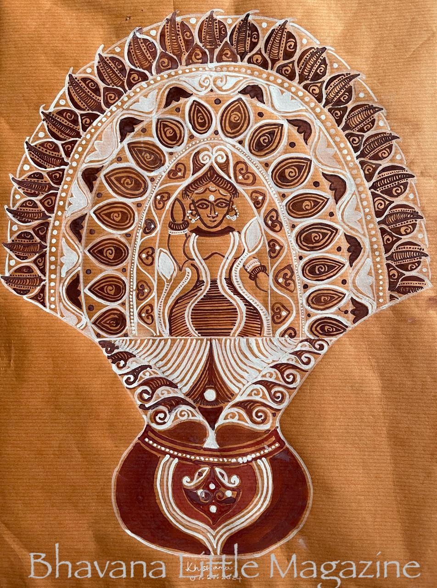

Manasa Chali, Alpona on paper, Haimonti Dutta
Manasa, the snake goddess, is worshipped extensively in eastern India
during the rainy season primarily due to the innumerable snake sightings
at this time. As part of the ritual, she is offered a ghot (a terracotta container>
which is exquisitely decorated with little snake-heads. This alpona (ornamental art form)
captures the essence of worship of Manasa.